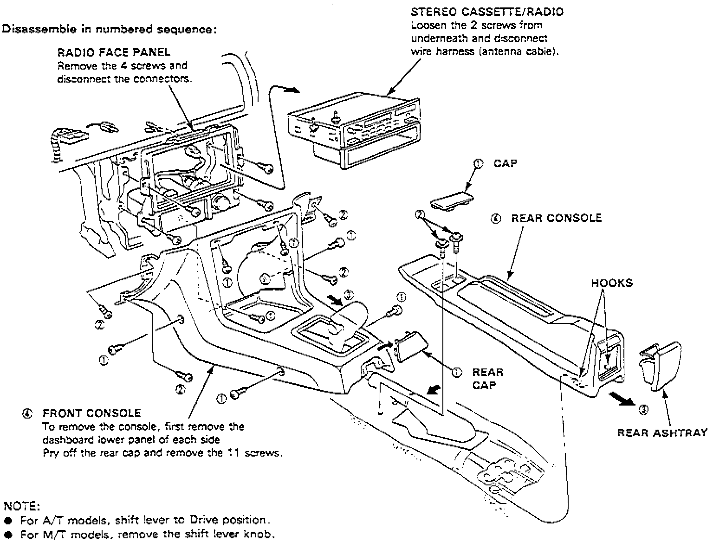
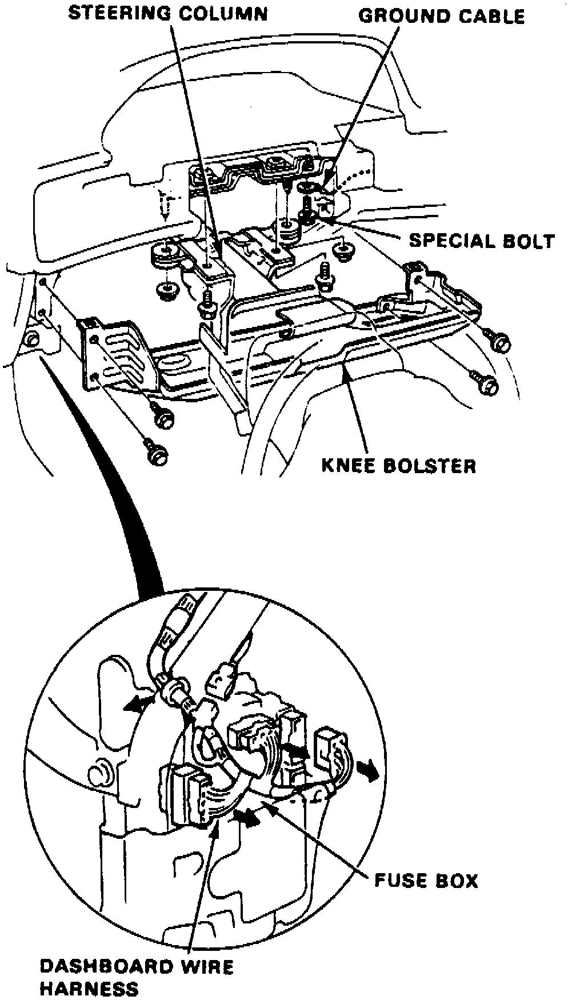
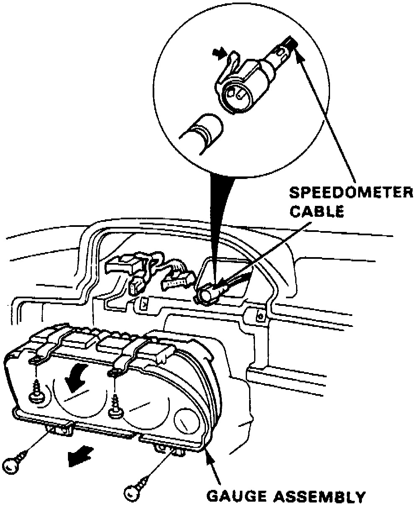
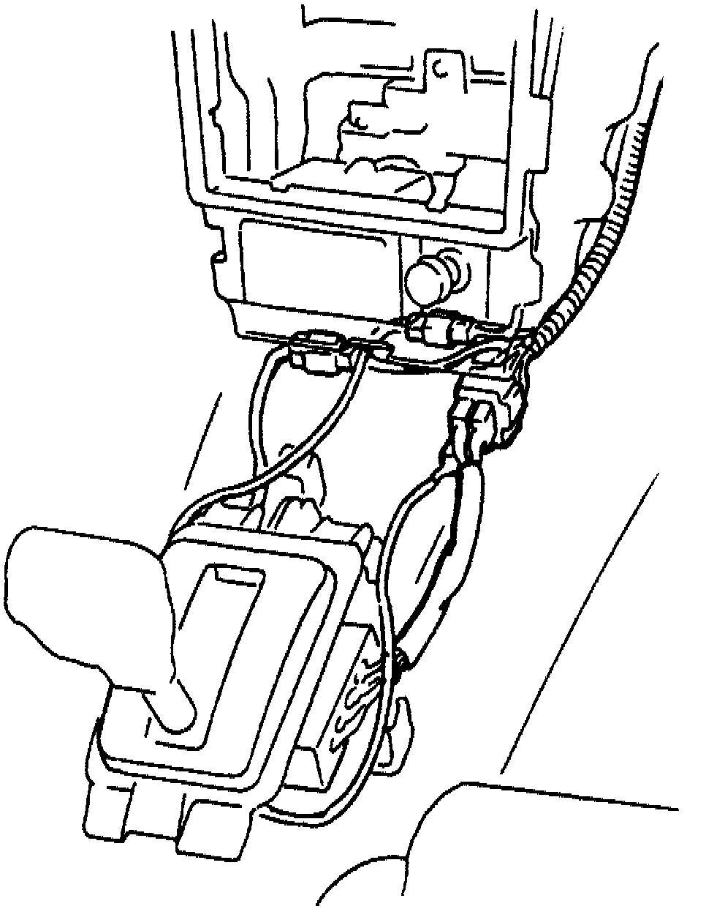
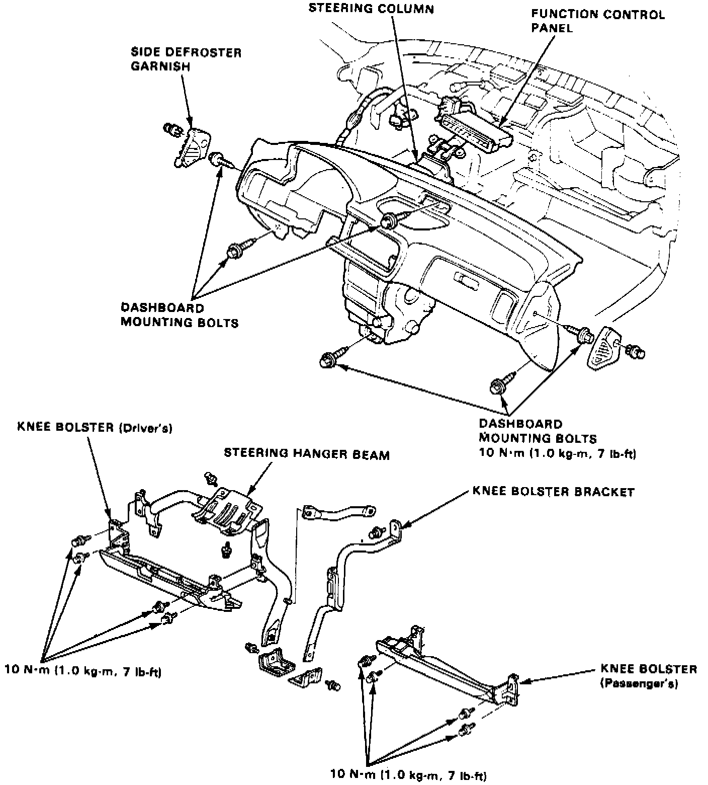

Dashboard / Instrument Panel: Service and Repair
1. On models equipped with radio coded theft protection system, refer to Vehicle Damage Warnings for system disarming and arming procedures. On models equipped with airbag system, refer to Technician Safety Information for system disarming and arming procedures.2. Remove left and right side lower panels.
Fig. 1 Exploded View Of Console Assembly:

3. Remove center console assembly in numbered sequence shown in Fig. 1.
4. Remove left side knee bolster.
Fig. 2 I/P Harness Connector:

5. Disconnect instrument panel electrical connector at fuse box, Fig. 2.
6. Remove steering column retaining bolts, then lower steering column.
7. Disconnect ground cable at right of steering column.
8. Remove meter hood.
Fig. 3 Gauge Assembly Removal:

9. Remove four gauge assembly retaining screws, then pull assembly outward and disconnect speedometer and electrical connectors, Fig. 3.
10. Remove radio assembly retaining screws, then pull radio outward and disconnect electrical connectors and antenna cable.
Fig. 4 Shift Position Switch And Shift Lock Wire Electrical Connectors:

11. Disconnect shift position switch and shift lock wire electrical connectors from instrument panel wire harness, Fig. 4.
12. Remove clock from top of instrument panel.
13 Remove left and right side defroster grilles.
Fig. 5 Exploded View Of I/P Assembly:

14. Remove instrument panel retaining bolts, Fig. 5.
15. Lift instrument panel assembly upward and remove.
16. Reverse procedure to install.
17. On models equipped with radio coded theft protection system, refer to Vehicle Damage Warnings for system disarming and arming procedures. On models equipped with airbag system, refer to Technician Safety Information for system disarming and arming procedures.